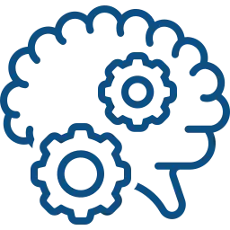
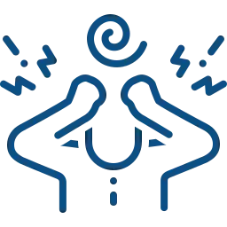
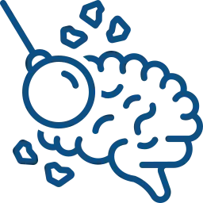
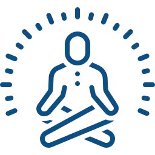
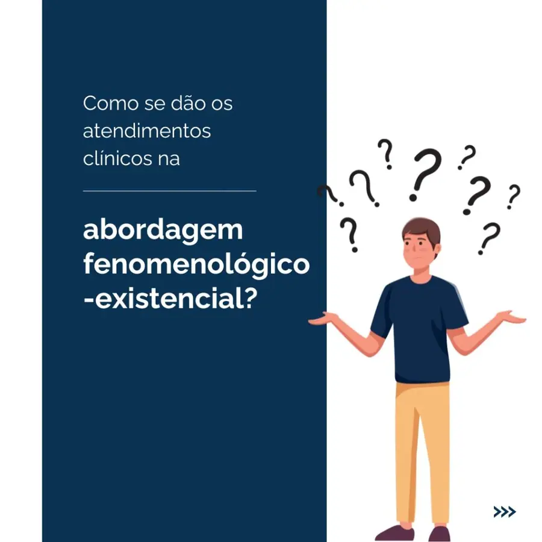
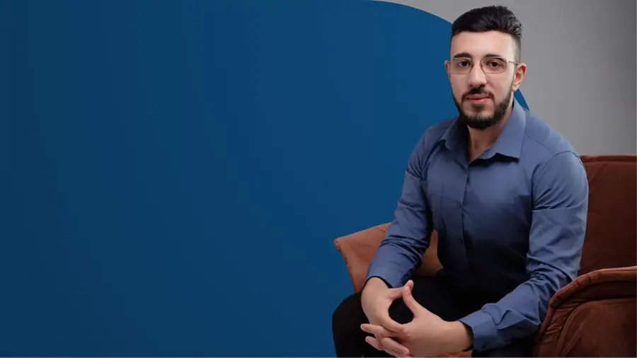
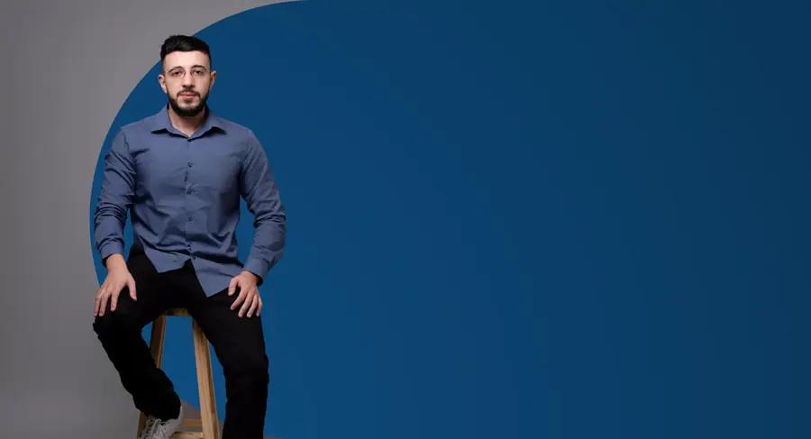
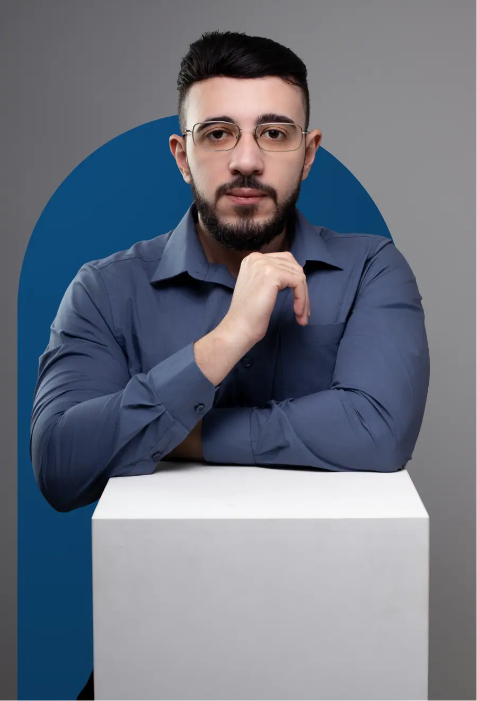

Paleta de cores
Medida no navegador: fundos ponderados pela área ocupada, textos pela quantidade de caracteres. Destaques reúnem cores saturadas e fundos de botão.
Fundos
rgb(10, 50, 82)
rgb(255, 255, 255)
rgb(5, 10, 48)
rgb(228, 243, 255)
rgb(37, 211, 102)
Textos
rgb(255, 255, 255)
rgb(70, 70, 70)
rgb(13, 79, 131)
rgb(96, 96, 96)
rgb(228, 243, 255)
rgb(61, 61, 61)
Destaques
rgb(10, 50, 82)
rgb(228, 243, 255)
rgb(13, 79, 131)
Gradientes
linear-gradient(rgb(10, 50, 82) 0%, rgb(13, 79, 131) 100%)linear-gradient(rgb(5, 10, 48) 0%, rgb(10, 50, 82) 100%)linear-gradient(120deg, rgb(10, 50, 82) 13%, rgb(13, 79, 131) 100%)Tipografia
Escala usada (desktop 1440px)
| Tamanho | Peso | Família | Amostra |
|---|---|---|---|
| 30px | 400 | Poppins | Texto de exemplo |
| 30px | 600 | Poppins | Texto de exemplo |
| 20px | 500 | Lato | Texto de exemplo |
| 19px | 600 | Rubik | Texto de exemplo |
| 19px | 500 | Poppins | Texto de exemplo |
| 19px | 700 | Poppins | Texto de exemplo |
| 18px | 700 | Lato | Texto de exemplo |
| 16px | 400 | Poppins | Texto de exemplo |
| 16px | 500 | Lato | Texto de exemplo |
| 15px | 400 | Rubik | Texto de exemplo |
Mobile (390px): 30px/400, 26px/400, 25px/400, 23px/400, 20px/600, 20px/500, 19px/600, 19px/500 · H1 no mobile: sem h1 semântico
Tags
| Tag | Família | Tamanho | Peso | Altura de linha | Espaçamento | Caixa | Cor |
|---|---|---|---|---|---|---|---|
| <h2> | Poppins | 30px | 400 | 30px | normal | none | #0D4F83 |
| <h3> | Rubik | 19px | 600 | 22.8px | normal | none | #414141 |
| <p> | Rubik | 16px | 400 | 24px | normal | none | #FFFFFF |
Botões
Recriados com os estilos computados reais. Efeitos de hover e animação não aparecem aqui; veja a seção de animações.
fundo #00000000 · texto #E4F3FF · raio 10px · padding 17px 20px · 18px/700 none · 3x na páginafundo #E4F3FF · texto #050A30 · raio 10px · padding 17px 20px · 18px/700 none · 3x na páginaCards e containers
Depressão, luto e dor persistente Tristezas que parecem não passar, perdas difíceis de dig
raio 19px · sombra none · borda 2px solid rgb(10, 50, 82) · 299x258pxAnsiedade e exaustão emocional Preocupações constantes, cansaço mental e dificuldade em de
raio 20px · sombra none · borda 2px solid rgb(10, 50, 82) · 299x258pxMeu trabalho se sustenta em três pilares: Escuta que acolhe de verdade Vamos juntos entend
raio 20px · sombra none · borda 1px solid rgb(192, 192, 192) · 667x461pxRafael Magalhães CRP - 05/78606 Sou Rafael Magalhães Pinto, psicólogo (CRP 05/78606), form
raio 20px · sombra none · borda 0px none rgb(51, 51, 51) · 620x547pxBordas, raios e sombras
Sombras
rgba(0, 0, 0, 0.5) 0px 0px 10px 0pxrgba(0, 0, 0, 0.15) 4px 4px 10px 0pxEspaçamentos
- Largura do conteúdo mais comum: 1240px
- Padding vertical das seções (topo/base): 0px/0px (11x), 60px/20px (1x)
- Gaps mais usados (flex/grid): 20px, 5px, 15px
- Altura total da página: 5403px em 12 seções
Estrutura e ritmo de cores das seções
Cada faixa é uma seção de topo, com altura proporcional e a cor ou imagem de fundo real.
Animações, ícones e bibliotecas
- Keyframes próprios: fadeIn, fadeInDown, fadeInLeft, fadeInUp, jw-images-layout-load-spin, jx-spinner, pulse
- Animações de entrada do Elementor: fadeIn, fadeInDown, fadeInLeft, fadeInUp, none
- Classes de scroll reveal da casa: nenhuma
- Ícones: 16 SVG, 0 ícones de fonte
- Bibliotecas e tags detectadas: ga4, google-ads, gtm, jquery, lottie, swiper
Snippets da biblioteca presentes nesta página
- Nenhum snippet da biblioteca identificado.
Imagens do site








